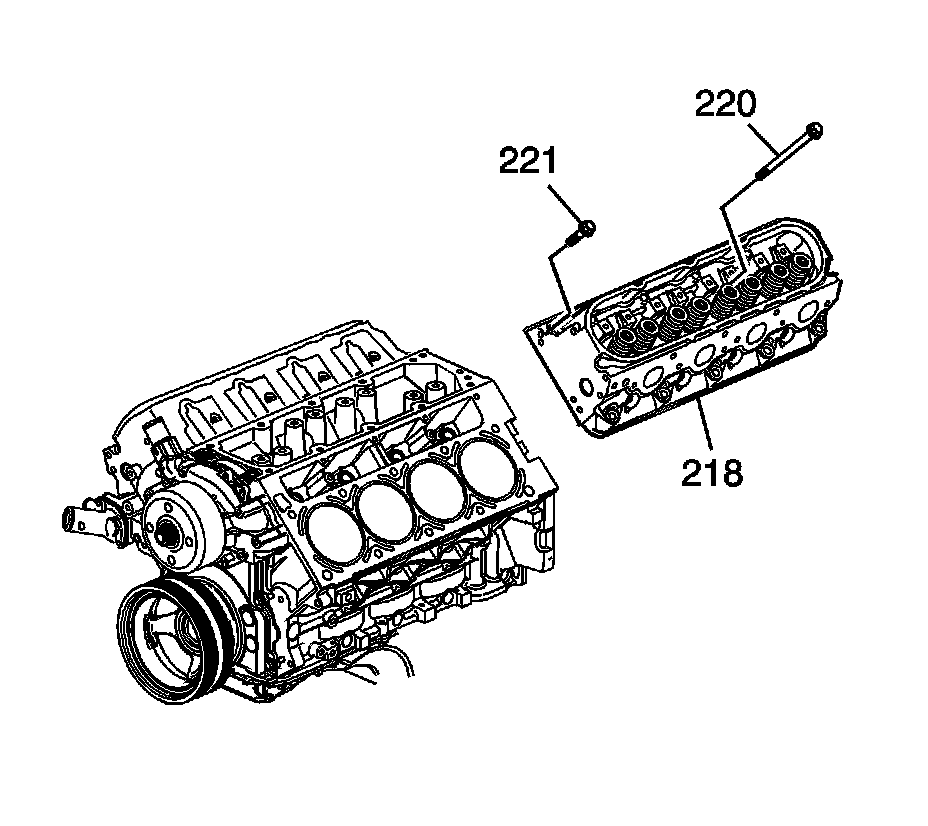
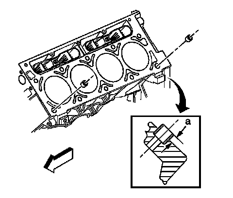
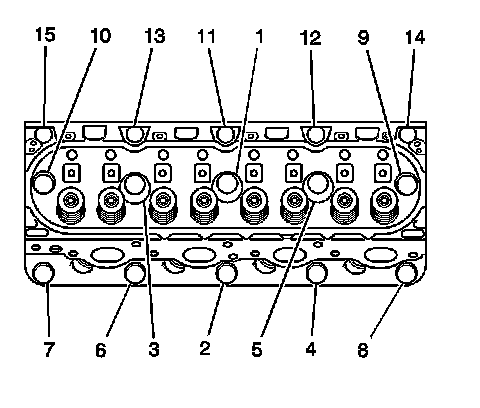

Cylinder Head Replacement - Left
Cylinder Head Replacement - Left Side
Tools Required
^ J 45059 Angle Meter
^ J 42385-200 Common Thread Repair Kit
Removal Procedure

1. Remove the generator bracket.
2. Remove the intake manifold.
3. Remove the coolant air bleed pipe.
4. Remove the left exhaust manifold.
5. Remove the pushrods.
6. Remove the engine ground strap bolt from the rear of the cylinder head.
7. Remove the ground strap from the cylinder head.

Important: The cylinder head bolts are of a torque-to-yield design and are NOT to be reused.
8. Remove and discard the cylinder head bolts (220, 221).
Notice: After removal, place the cylinder head on 2 wood blocks in order to prevent damage to the sealing surfaces.
9. Remove the cylinder head (218).

10. Remove and discard the cylinder head gasket (217).
11. If required, clean and inspect the cylinder head. Refer to Cylinder Head Cleaning and Inspection.
Installation Procedure
Caution: Wear safety glasses in order to avoid eye damage.
Notice: Clean all dirt, debris, and coolant from the engine block cylinder head bolt holes. Failure to remove all foreign material may result in damaged threads, improperly tightened fasteners or damage to components.
Important:
^ Do not reuse the cylinder head bolts. Install NEW cylinder head bolts during assembly.
^ Do not use any type of sealant on the cylinder head gasket (unless specified).

1. Clean the engine block cylinder head bolt holes, if required. Thread repair tool J 42385-107, found in J 42385-200 may be used to clean the threads of old threadlocking material.
2. Spray cleaner GM P/N 12346139, P/N 12377981 (Canadian P/N 10953463), or equivalent into the hole.
3. Clean the cylinder head bolt holes with compressed air.
4. Check the cylinder head locating pins for proper installation (a) 8.3 mm (0.327 in).
Important: When properly installed, with FRONT on the left side, the tab on the cylinder head gasket should be located left of center.
5. Install the NEW cylinder head gasket (217) onto the locating pins.
6. Install the cylinder head (218) onto the locating pins.
7. Install the NEW cylinder head bolts (220, 221).

Notice: Refer to Fastener Notice.
8. Tighten the cylinder head bolts.
1. Tighten the M11 cylinder head bolts (1-10) a first pass in sequence to 30 N.m (22 lb ft).
2. Tighten the M11 cylinder head bolts (1-10) a second pass in sequence to 90 degrees using J 45059.
3. Tighten the M11 cylinder head bolts (1-10) a final pass to 70 degrees using J 45059.
4. Tighten the M8 cylinder head bolts (11-15) to 30 N.m (22 lb ft). Begin with the center bolt (11) and alternating side-to-side, work outward tightening all of the bolts.
9. Position the ground strap to the rear of the left cylinder head.
10. Install the engine ground strap bolt to the rear of the left cylinder head.
Tighten the bolt to 16 N.m (12 lb ft).
11. Install the pushrods.
12. Install the left exhaust manifold.
13. Install the coolant air bleed pipe. Refer to Coolant Air Bleed Pipe Assembly Replacement.
14. Install the intake manifold.
15. Install the generator bracket.